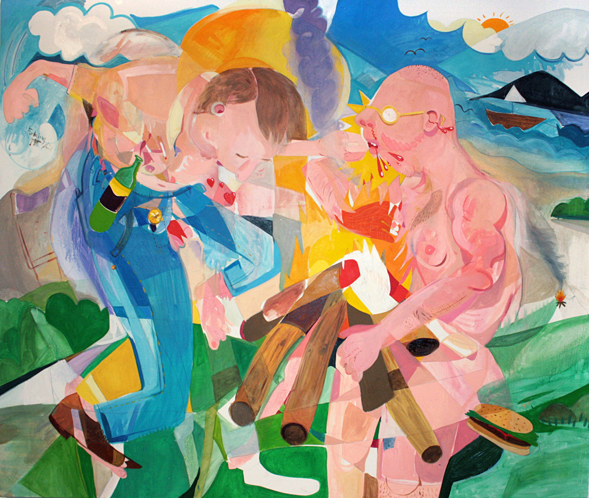
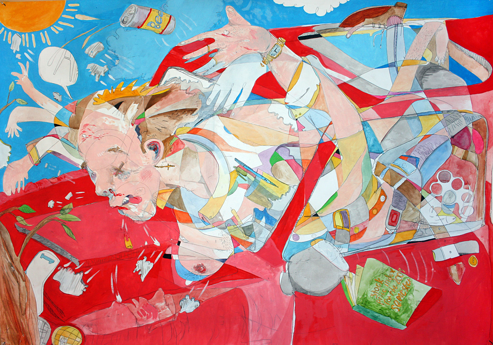
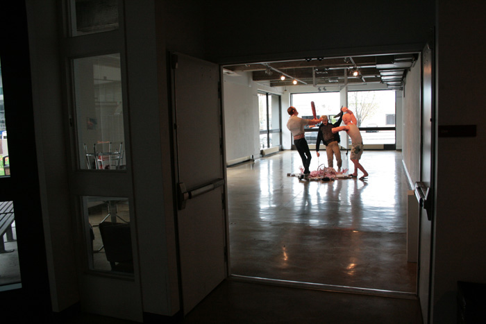
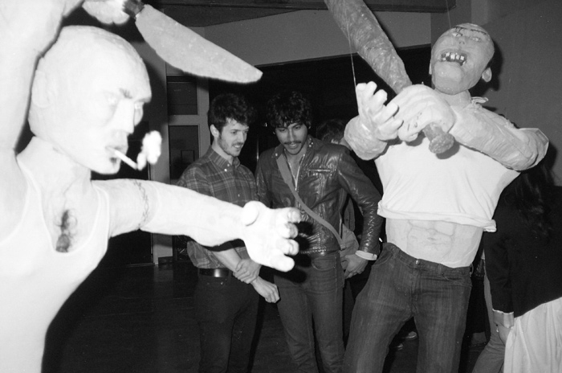
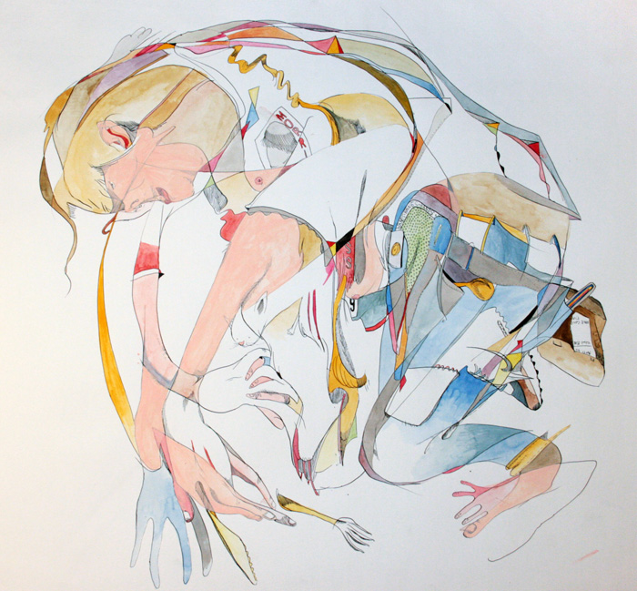

Early Work: Conventional Painting, Drawing, and Sculpture (2006 to 2009)
I began my art practice in Montreal with drawing, painting, and sculpture. I favored an expressionist style, heavily influenced by cubism, Weimar-era German artmaking, and contemporary illustration. Thematically, I mostly explored representations of violence and masculinity--I guess processing my experiences growing up in aquite violent place, where violence was a proxy for masculinity and heterosexuality: in demonstrative, valorizing, and normative (by its exercise against those perceived to be lacking) modes.
Some examples:

Nude Beach Scene, oil encaustic on canvas, 6 feet x 4.5 feet, 2009

Crash, graphite, gouache, and watercolour on paper, 120 x 50 cm, 2008


Three men beating one another to death with sticks and bats and such, installation views, oil encaustic and fibres on polystyrene, dimensions variable, 2009. Collaboration with Mark Stroemich

Jesse's roti, pen and ink, watercolour, and gouache on paper, 60 x 80cm, 2007
back
Name Last modified Size Description
Parent Directory 28-May-2025 12:17 -
Early Work (2006-2009) 28-May-2025 14:30 963k artworks